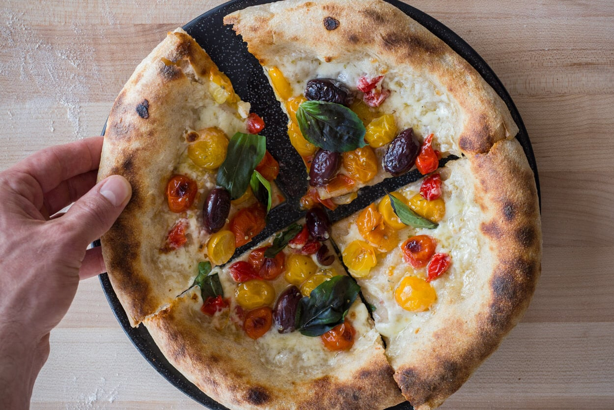
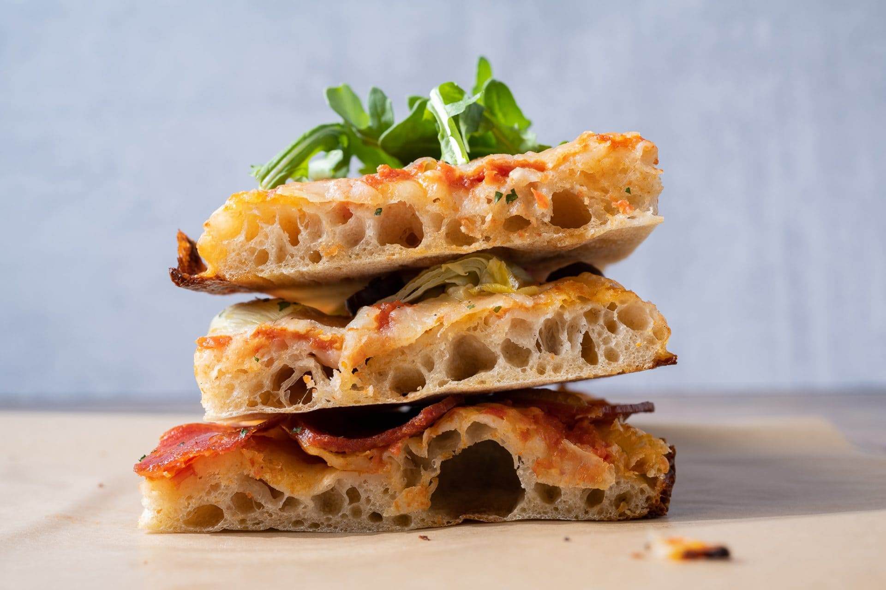
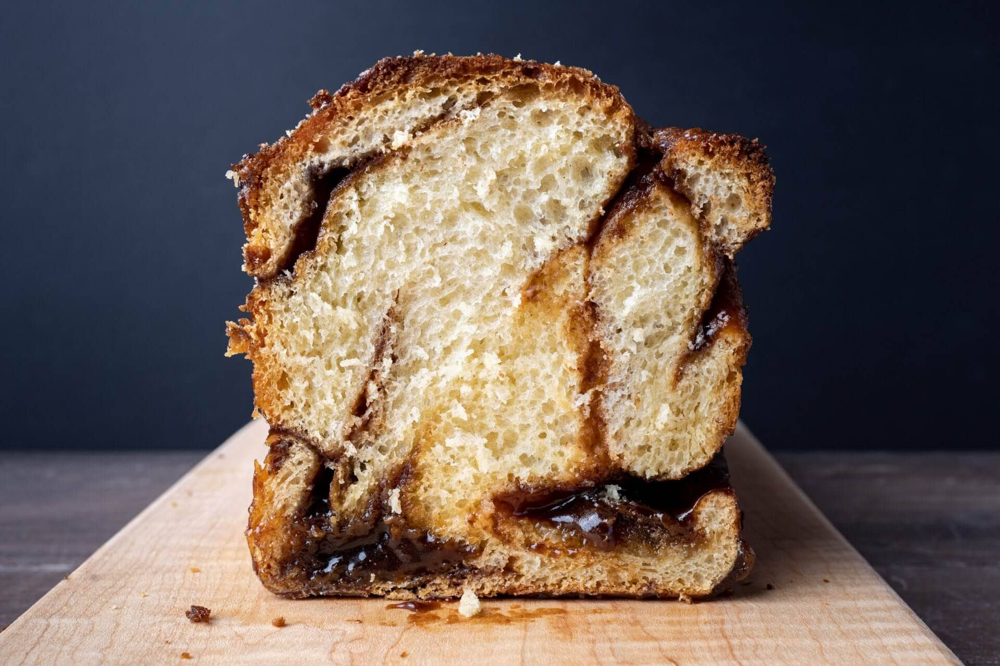

Sourdough Pizza When you think of great pizza, what comes to mind? I think the answer depends on your background, where you grew up, and just how much you’ve eaten. There’s nothing better to me than a Naples-style pizza with that thin crust and that blistered and puffy cornicione, but it’s challenging to get this type of crust that comes out of a blazing hot wood-fired oven, and that’s ok. Pizza at home doesn’t have to try to imitate a Naples style pizza; it can be exciting and delectable in a completely different way. One day I’ll have a wood-fired oven, but until then, the focus here is to make a sourdough pizza dough that’s incredibly tasty, versatile, and flexible.
RECIPE
423g All-purpose flour
181g High protein bread flour, malted
12g Extra virgin olive oil
459g Water
11g Salt
115g Sourdough starter (100% hydration)
Sourdough Focaccia Because sourdough focaccia has so few ingredients, the ones you use should be of the utmost quality. Use vegetables in season and the highest quality olive oil you can find. In this post, I worked with Jovial's Olio Nuovo, a fresh-pressed olive oil from the Valpantena area of Northern Italy. It isn't easy to source exclusively fresh-pressed olive oil. Usually, this oil is blended with aged oil, balancing the flavor profile to make it consistent with other offerings throughout the year. This fresh oil has a delicate flavor but a balanced, upfront fruitiness as well. If you've never had the chance to try an oil like this, you'll be pleasantly surprised.
RECIPE
288g Type 00 White Flour
32g Whole Wheat Flour
215g Water
2g Diastatic Malt (optional)
6g Salt
48g Mature, liquid starter
Sourdough Chocolate Babka This recipe will work with many different pans, but I eventually turned to my trusty 9 x 4 x 4-inch Pullman Pan in testing. The reason is twofold: first, I love the resulting straight-sided and presentable sourdough babka. Second, the USA Pan has a natural silicone lining and this, in combination with parchment paper, makes cleanup a snap.If you don't have a Pullman pan, a typical 8.5 x 4.5 x 2.75-inch loaf pan will also work well.
RECIPE
357g All-purpose Flour
107g Whole Milk
107g Large Eggs
100g Unsalted Butter
46g Water
29g Caster Sugar
8g Salt
46g Mature, liquid starter